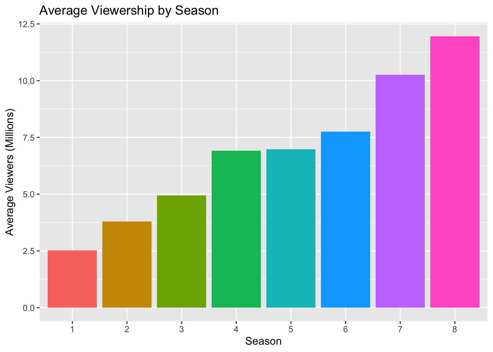

Game of Thrones is an American fantasy drama television series that aired on HBO from 2011 to 2019. Based on George R. R. Martin’s A Song of Ice and Fire, the show quickly became a cultural phenomenon.
Game of Thrones
Viewership Dataset
We use publicly available data from Wikipedia that contains episode-level viewership in millions.
ggplot(got, aes(x = Episode, y = Viewers_Million, group = Season, color =as.factor(Season))) +geom_line() +geom_point() +labs(title ="Game of Thrones Viewership by Episode",x ="Episode Number",y ="Viewers (Millions)",color ="Season")
Season-to-Season Viewership
season_avg <- got %>%group_by(Season) %>%summarise(Average_Views =mean(Viewers_Million))ggplot(season_avg, aes(x =factor(Season), y = Average_Views, fill =factor(Season))) +geom_col(show.legend =FALSE) +labs(title ="Average Viewership by Season",x ="Season",y ="Average Viewers (Millions)")

Observations
Between season 1 and season 8, the viewership increased significantly from an average of approximately 2.5 million to over 12 million. However, some fluctuation is seen in season 5 and season 6, before peaking in season 8.
References
James, Gareth, et al. An Introduction to Statistical Learning. Springer, 2013.